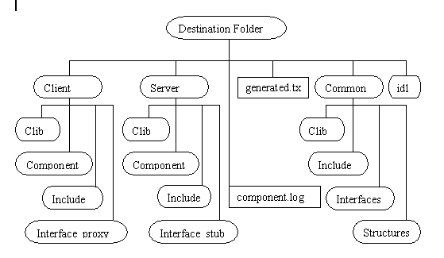

The EiffelCOM Wizard
OVERVIEW
The COM standard allows software components written in different languages to communicate with each other. Unfortunately, building COM compliant applications requires the development of large amount of code only dedicated to support the technology. The EiffelCOM wizard was designed to free programmers from writing the plumbing code.The EiffelCOM wizard is a powerful tool that enables the fast development of COM components in Eiffel and access COM components from Eiffel systems. It consists of a series of dialogs, which ask about the component’s characteristics. The wizard needs the data to produce an Eiffel system skeleton, the code to access or create a component, and the component-specific runtime libraries.
The wizard allows Eiffel developers with little COM knowledge to develop and reuse COM components. The design of the generated code follows the Eiffel standards and is familiar experienced Eiffel users. The only prerequisite to use the EiffelCOM wizard is an understanding of the Interface Definition Language. IDL describes a component. Standard compilers can generate Type Libraries from IDL files. Tools that need information on a given component, such as the EiffelCOM wizard, Visual Basic, etc. analyze Type Libraries. The IDL syntax is very close to C and easy to learn.
The wizard generates code from a Type Library and additional information given by the user. The generated code consists of Eiffel classes, C/C++ files, and library files. The wizard automatically produces library files from generated C and C++ code. You do not need to modify generated C/C++ code to build your EiffelCOM system.

The wizard automatically compiles the generated C and Eiffel code. To produce a Type Library corresponding to a given IDL file the wizard uses MIDL, the MICROSOFT IDL compiler. You may also provide the wizard with a Type Library directly. For the rest of the manual a COM Definition File will refer to the input file given to the wizard (either an IDL file or a Type Library). If you want to start from an existing Eiffel system, the wizard accepts an Eiffel class and generates an IDL file from it and then proceeds as above.
THE WIZARD
This chapter details the wizard and code generation. The wizard has seven different dialogs. The third dialog is different depending on whether the wizard have started from an Eiffel system, an IDL file, or a Type Library. Once the dialogs have been completed, the wizard generates a Type Library if needed, then analyzes the Type Library, and generates the code.
Introduction Dialog and Main Window
The EiffelCOM wizard can be launched from the Windows start menu:
where EiffelXX corresponds to your Eiffel installation (e.g. Eiffel45). The following window will be displayed:
The introduction dialog lets you choose between opening an existing project or creating a new one either from a COM definition or from an Eiffel project. Creating a new project will open the Generated Code Type Dialog. Opening an existing project will display an Open File Dialog from which you can select a previously saved EiffelCOM project.The four buttons at the bottom of the dialog Back, Next, Cancel and Help are common to all dialogs displayed throughout the execution of the wizard. Next validates all the values entered in the current dialog and activates the next one. Back discards all the values entered in current dialog and displays the previous one. Cancel exits the dialog and discards all the values entered. Finally, Help brings up this manual.
The main window includes a toolbar and a menu. The first three buttons on the toolbar correspond to the first three entries in the File menu: New, Open and Save. New resets all the information previously entered in the wizard. Open brings up an Open File Dialog that can be used to retrieve a previously saved EiffelCOM project. Save is used to save the current project. A project is defined by all the values entered in the wizard. A project can be saved only after the wizard has been run. The file extension for an EiffelCOM project is ewz.The second menu, Build, includes the entries Launch Wizard and Generate (no wizard) corresponding respectively to the last two toolbar buttons. The former activates the Generated Code Type Dialog. while the later launches the generation with the current settings and bypasses the dialogs. This last button can be used only when a project has been loaded or when the wizard has been run once.
The third menu, Help, includes Help and About EiffelCOM. Help brings up this manual. About EiffelCOM brings About EiffelCOM Dialog that gives the version number.
Required File
Before you launch the wizard make sure you have a COM definition file or an Eiffel project ready for processing.Generated Code Type Dialog
The first dialog asks if you want to access or build a component. If you want to access an existing component then the generated code will be for a client. If you choose to build a new one, the generated code will be for a COM server. Choose the server or client check box to specify which kind of project you want to work on. You may specify both in the case where both the component and its client(s) will be written in Eiffel.EiffelCOM supports the following component executable types:
In-Process: These components are Dynamic Link Libraries (DLLs) that will be loaded into the client process. The server runs in the same process as the client.
Out-of-process: These components are executable files that can be accessed through the network. Clients and servers run in different processes and may even run on different machines.
In-process components are Active-X like components; they are usually smaller than local or remote components and used by bigger application (often through a high level language). Local components run on the same machine as a client. Remote components run on different machine and can act as middleware in a three-tier client server architecture. Choose the kind of component you want to access or create.
If you do not want to compile the generated code automatically, check the checkboxes at the bottom of the dialog.
Definition File Dialog
This dialog asks for the location of a COM definition file for the project. A COM definition file is either an IDL file or a Type Library. An IDL file is usually provided when building a new component since all the sources are available. However, when it comes to accessing an existing component, the sources might not be available. A Type Library is often embedded into the component and includes enough information for the wizard to generate the code.The wizard accepts the following type extensions: idl, tlb, ocx, olb, dll, and exe.
The destination folder is the directory where the wizard saves generated files. The directory should be empty. If the wizard were to overwrite an existing file it would first back it up and emit a warning message. If any of the entered values are not correct when the Next button is pressed the wizard displays a warning message.Eiffel Project File Dialog
The Eiffel project file Dialog asks for the location of an Eiffel project file (*.epr), the Ace file of the project, the name of the Eiffel class that will be converted into an IDL file, and the cluster name to which the Eiffel class belongs.Destination Folder Dialog
The Destination Folder Dialog asks for the destination folder path where the wizard can safe generated files.
IDL Marshalling Definition Dialog
This dialog is displayed only for a server project and if the chosen definition file is an IDL file. It is used to specify how marshalling will work for the component. The first choice that has to be made is whether the component will be accessed through Automation (using IDispatch) or through the interface's virtual table (for additional information on Automation versus virtual table access, please consult COM).If you choose Automation, then the Universal marshaler will be used (for additional information on Marshalling please see the chapter COM). If you specify Virtual Table access, then you have the choice between using the Windows Universal marshaler and the marshaler generated from the definition file. Since this dialog is displayed only when the definition file is an IDL file, choosing Standard Marshalling will force the wizard to compile the marshaler from the code generated with the MIDL compiler. Standard marshalling should be used whenever some interface functions make use of non-Automation compatible types.Type Library Marshalling Definition Dialog
The Type Library Definition Dialog is displayed only for a server project when the definition file is a Type Library. You have to choose between Automation and Virtual Table access and between Universal and Standard marshaling.Because the definition file is a Type Library, the wizard cannot compile the Standard marshaler without additional information. This is the reason for having an extra text field for the path to the marshaler (also known as Proxy/Stub pair or just Proxy/Stub). The Proxy/Stub is a Dynamic Link Library that is used to marshal the data on the wire for a given component.Final Dialog
The last dialog offers a choice of different output levels. By default, the wizard will display errors, warnings and generic information. You can choose not to see warnings and/or extra information.This dialog also asks whether you wish to continue even though an error occurred while compiling a file.The Finish button closes the dialog and starts the processing. You can save the project after the wizard finishes.
COM Definition File Processing
Six phases are involved in the COM definition file processing:IDL Compilation: If the definition file is an IDL file, the wizard compiles the IDL file into a Type Library and if Standard Marshalling have been chosen, produces the marshaler from the generated C files.
Type Library Parsing: The wizard analyzes the type library and transforms the information it needs to generate the code into internal representation.
Code Generation: The wizard generates both the Eiffel and C/C++ code from the information gathered during the previous step.
C/C++ Compilation: The wizard compiles the generated C and C++ code into object files and libraries that will be linked with the Eiffel system.
Eiffel Compilation: For a client project the wizard compiles the generated Eiffel code into a precompiled library that can be reused from other projects. For a server project the wizard compiles the generated Eiffel code into a standard project with the registration class as root class. If the location is In-process then the project corresponds to a DLL whereas if the location of the server is out-of-process then the project corresponds to a standard executable.
Finally, the wizard launches EiffelBench and automatically opens the generated Eiffel system.
During processing, the name and progress of each phase is displayed.
While processing the wizard displays information in real time in the main window if this option was chosen in the Final Dialog. Displayed information includes output of calls to external compilers (C, Eiffel and IDL) and description of the current analyzed or generated Type Library item.Eiffel Project Processing
Eiffel project processing has an additional phase: IDL file generation. During the phase the wizard translates an Eiffel class into an IDL file. Preferably, you should write a special class to serve as a Facade to your system. After IDL generation the wizard proceeds as above.Generated Files
The wizard generates code into the specified destination folder. The file hierarchy is the following:
Generated Files Hierarchy

The root folder has two files and four subclusters.
The file generated.txt includes a list of all the files generated by the wizard.
The file component.log contains a summary of the processing done by the wizard. The name of the file is the name of the definition file appended with log (so Figure 10 presumes that the definition file was e.g. component.idl)
The folder idl contains the generated IDL file.
The folders Client and Server include the files generated respectively for reusing a component or creating a new component. Each consists of three subdirectories: Include comprises header files needed to compile the Eiffel code, CLib contains the generated C and C++ code as well as the library files. Component holds Eiffel code that wraps or defines the component. The Component subfolder of Server also includes the registration class. This Eiffel class contains the code needed to activate the component; it depends whether the component is in-process or out-of-process. You do not need to read or edit the C and C++ code included in CLib because the wizard automatically compiles it. It is given for information only and can be deleted (you need to keep the library file though). The Client and Server folders also have an Ace file used to compile the generated Eiffel code. In the case of a client, the generated code is precompiled whereas in the case of a server it is compiled in a normal system with the registration class being the root class of the system. In the case of an in-process server the Eiffel system is compiled into a DLL whereas in the case of an out-of-process server, it is compiled in a standard executable.
The Common folder comprises code that is used for both the server and the client parts. The Include and CLib directories contain respectively the header files and the C and C++ code. The C and C++ sources are not needed and can be deleted, only the library file needs to be kept for the Eiffel system to compile. The Interfaces subdirectory include Eiffel classes corresponding to the component interfaces and the Structures subdirectory includes Eiffel classes wrapping data structures specified in the definition file.
Class Hierarchy
The generated Eiffel code reflects the architecture of the component described in the definition file. Each interface corresponds to a deferred Eiffel class that includes one deferred feature per interface function. The deferred features are implemented in the heir inheriting from all interfaces. This central class will be referred to as Eiffel coclass in the rest of this document.In a client application the Eiffel coclass inherits from the class ECOM_QUERIABLE, which is part of the EiffelCOM library. This class includes the feature make_from_other to initialize the component from another instance of ECOM_INTERFACE.In a server application the Eiffel coclass inherits from the class ECOM_STUB, which is part of the EiffelCOM library. This class includes the feature create_item to initialize the component for COM.The Interface_proxy folder includes Eiffel classes wrapping interfaces that are sent to or received by the component. Such interfaces will be referred to as client implemented interfaces in the rest of the document. These classes inherit from both the deferred interface class and ECOM_QUERIABLE.
The Interface_stub folder includes Eiffel classes implementing interfaces that are sent by the component. Such interfaces will be referred to as server implemented interfaces in the rest of the document. These classes inherit from both the deferred interface class and ECOM_STUB.
For both Eiffel coclass and Implemented interfaces, the INTERFACE class contains no implementation; it only defines the signatures of the functions that are part of the interface. The actual implementation lies in the heir of that class.
How you should use the generated classes in your system depends on whether you want to access an existing component (client) or build a new component in Eiffel (server).
ACCESSING A COMPONENT
The wizard generates all the necessary code to access the existing component. The plumbing is already done, so instantiating an Eiffel coclass actually initializes COM internals.Using the Generated Code
To access the component, you need to call features of the coclass. The data types of function arguments are either Eiffel types defined in Eiffel data structure libraries (EiffelBase), standard COM data types defined in the EiffelCOM library, or component COM data types specified in the definition file. For example, from the following IDL lineThe wizard generates the following feature in the Eiffel coclass:where MY_STRUCT_RECORD is a generated Eiffel class wrapping MyStruct.Here is a more difficult example:
HRESULT a_function ([in] IsomeInterface * p_interface)
The wizard generates the following Eiffel feature:
a_function (p_interface: ISOME_INTERFACE_INTERFACE)
where ISOME_INTERFACE_INTERFACE is a generated deferred class. Where can you obtain an instance of the class? First, you may receive from other function. Second, you can create an implemented server interface ISOME_INTERFACE_IMPL_STUB. In the later case you should provide your own implementation.
Contracts
The wizard cannot generate fully specified contracts. Indeed, the tool has no domain specific knowledge and can only generate contracts that are domain independent. Such contracts, although useful, are not enough to describe entirely the behavior of the component. Generated contracts include void Eiffel objects as well as C pointer validity (for wrappers) checking. There might be other conditions to allow calls to an Eiffel coclass feature. Invariants and postconditions can be enforced in an heir of the generated Eiffel coclass. Preconditions, however, cannot be strengthened. A workaround provided by the wizard is to generate a precondition function for each feature in the interface. The default implementation of these functions always returns True. They should be redefined to implement the correct behavior:So the complete class hierarchy for an Eiffel client coclass is the following:Another advantage of the previous hierarchy is that it adds incrementality to the EiffelCOM system. Indeed, should the definition file be modified and the wizard run once more against it, your code would not be changed. Only the generated Eiffel coclass would be, and it would suffice to adapt your heir accordingly.Exceptions
COM standard requires that any interface function returns a status value (known as a HRESULT). This corresponds to side effect features which the Eiffel methodology tends to avoid. The workaround used in EiffelCOM systems is to map these return values into Eiffel exceptions. If the server returns an error code, the EiffelCOM runtime raises an Eiffel exception that your code should catch.As a result, any feature in the coclass client making calls to the user defined Eiffel coclass should include a rescue clause. The processing done in this clause might depend on the nature of the exception. All the standard COM exceptions can be found in the library class ECOM_EXCEPTION_CODES, which is inherited from by ECOM_EXCEPTION. The later also inherits from the kernel class EXCEPTIONS and can consequently be used by the coclass client to catch the exceptions.The following code snippet illustrates how a client can process exceptions raised in the Eiffel coclass:
feature {NONE} -- Initialization
elseif hresult = E_invalidarg then
Summary
There are a few rules to follow when building an Eiffel coclass client, but they are straightforward and do not add any constraints. First, inherit from the generated Eiffel coclass to implement the preconditions. Second, any feature call to the Eiffel coclass should include a rescue clause.
BUILDING A COMPONENT
The EiffelCOM wizard enables the development of COM components in Eiffel. To build a COM component you can start either from an IDL file or from an Eiffel project. In the later case the wizard generates an IDL file for you.
Choosing an Eiffel Class
If you start building a COM component from an Eiffel system, you need to give an Eiffel class to the wizard. The wizard translates the Flat-Short form of the class into an IDL file, which is a formal specification of the COM component. Clients of the component are able to access only features specified in the IDL file. You need to supply the wizard with a Facade class that provides clients with a higher-level, single interface (do not confuse with COM interface) to the facilities of a system.
The Facade class should satisfy the following requirements:
- It should have a creation routine "make" without arguments. The wizard does not enforce the rule, but breaking it causes a runtime error.
- Features of the class may only have arguments and return values of the following types: CHARACTER, INTEGER, REAL, DOUBLE, BOOLEAN, INTEGER_REF, BOOLEAN_REF, REAL_REF, CHARACTER_REF, DOUBLE_REF, STRING, DATE_TIME, ECOM_CURRENCY, ECOM_DECIMAL, ECOM_UNKNOWN_INTERFACE, ECOM_AUTOMATION_INTERFACE, and CELL and ECOM_ARRAY of above types. Features with arguments or return values of other types are excluded from the generated IDL file and are not accessible to the COM runtime.
- Feature names should not be C++ keywords or names of standard library functions such as min, max, etc. The wizard is able to handle this correctly and to create a COM component; however, other languages may not be able to access it.
- The class must belong to a compiled Eiffel project.
In most Eiffel systems functionality is spread out throughout many classes. A system may not contain a class that can render all services of the system and can serve as a Facade to the outside world. If you cannot find such a class you should write one.
Using the Generated Code
If you start from an Eiffel project, the wizard produces a ready-to-use component, and you do not need to modify or to implement any generated code.
If you start from a COM definition file, you are able to design a more flexible component that has more than one interface and/or coclass and user defined types, but you have to implement features of the generated coclass. The generated Eiffel coclass features are empty. You should redefine them in heir to implement the intended behavior. Unlike client generated code, the server generated code will differ whether you have chosen to implement an in-process or an out-of-process component. The difference lies in the component activation code in the class ECOM_<Name_of_system>_REGISTRATION. If the component is in-process then this class includes the four functions that need to be exported from an in-process COM component (DllRegisterServer, DllUnregisterServer, DllGetClassObject, and DllCanUnloadNow). If the component is out-of-process then the registration class includes a feature initializing the component and its graphical user interface.
The architecture of generated code for the server is similar to the one for the client: the generated Eiffel coclass should be inherited from and the contract features redefined. The default feature implementation of the generated Eiffel coclass is empty. Features should be redefined to implement the intended behavior. These features will be called by the EiffelCOM runtime whenever a client accesses an interface.
The architecture remains the same as when accessing a component: the generated Eiffel coclass should be inherited from and the contract features redefined. The default implementation for features from the generated Eiffel coclass are empty. They should also be redefined to implement the intended behavior. These features will be called by the EiffelCOM runtime whenever a client access an interface.
Component's GUI
In the case of an out-of-process server, you might want to add a Graphical User Interface to your component. There are two different scenarios in which the component can be activated: either its user launched it explicitly (e.g. by double clicking the executable icon) or it was launched by the COM runtime to satisfy a client request. The GUI should appear only in the former case, when the user has explicitly launched the application. The generated registration class for an out-of-process server includes the feature:This feature is a once function that can be redefined in a child class to return the class corresponding to the component window. This window is displayed only if COM does not start the component. When COM loads an out-of-process component, it appends the option "-embedding" to the executable. The generated registration class looks for this option and if it is part of the process argument list then it sets the default window appearance to hidden.As a summary, when building a server from a COM definition you need to implement classes that inherit from coclasses and implement interface functions. The names of the children classes should be the names of the parent classes appended with _IMP. You will also have to inherit from the registration class in the case of an out-of-process component to provide the class that implements the component GUI.
Exceptions
The COM provides error status to the client by returning an HRESULT from the interface function. Such behavior is not acceptable in Eiffel and is replaced with exceptions. In the case of accessing an existing component, EiffelCOM runtime will raise exceptions with error code 24 (developer exception) and your code should catch them. When creating a component it will be your code that will raise exceptions and the EiffelCOM runtime that will catch them. Here is what the Eiffel code for a server should look like:This class inherits from the generated Eiffel coclass and from ECOM_EXCEPTION. It redefines the feature coclass_feature from the generated coclass. This feature is part of the interface functions that can be called by clients of the component. Its implementation uses the feature trigger from ECOM_EXCEPTION to raise exceptions in case the feature cannot be executed normally (invalid argument e.g.). The EiffelCOM runtime catches the exception and maps it into an HRESULT that is sent back to the client.Summary
Implementing EiffelCOM components consists in inheriting from the generated Eiffel coclasses and implementing their features. The only specific rules to follow relate to the redefinition of precondition features and the use of exceptions to return error status to the client. In the case of an out-of-process server, the registration class should be inherited from and the feature corresponding to the component window redefined to return the correct class.